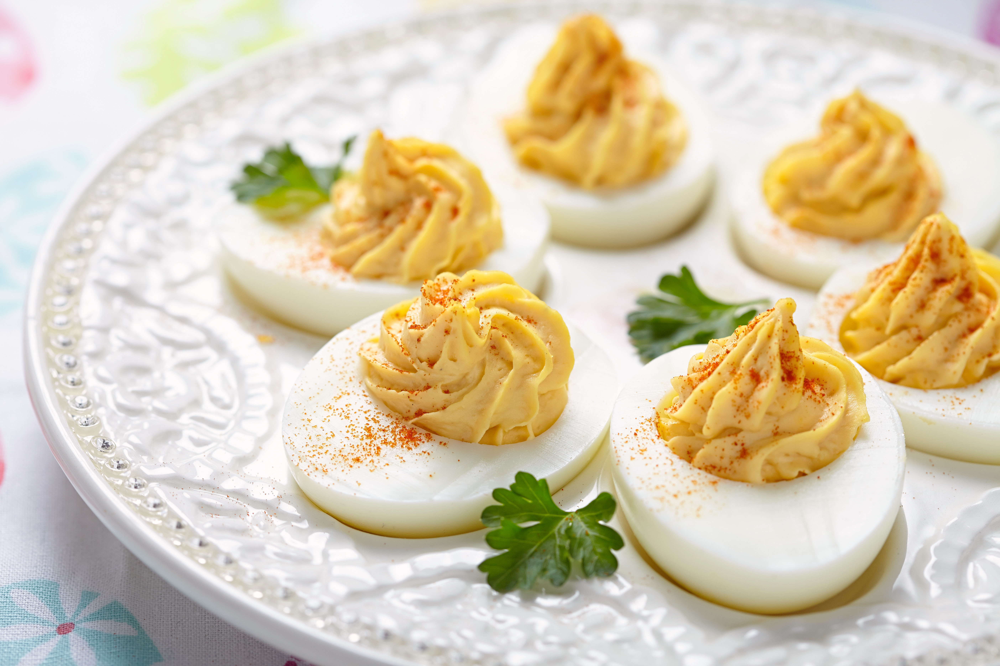

Deviled Eggs

Description
This deceptively delicious dish can always be spotted at cookouts.
Being both high in protein and easy to make, this could easily become a staple dish.
Being both creamy and filling people will be astounded that they're full after only a few.
Make sure you gather your ingredients and follow the steps below.
Ingredients
- 6 large eggs
- Ice
- 2 Tbsp. mayonnaise
- 1 1/2 Tbsp. sweet or dill pickle relish
- 1 tsp. yellow mustard
- 1/4 tsp. kosher salt
- 1/4 tsp. black pepper
- Garnish: paprika (optional)
Steps
- Boil eggs: 11 minutes
- Make ice bath
- Chill eggs: at least 5 minutes
- Peel eggs
- Halve eggs
- Using a fork, mask together yolks and mayonnaise in a medium bowl. Add relish, mustard, salt, and pepper; stir well to combine.
- Spoon or pipe about 1 tablespoon filling into each egg white half. Garnish with paprika, if desired. Serve immediately, or store, covered, in refrigerator up to 3 days.